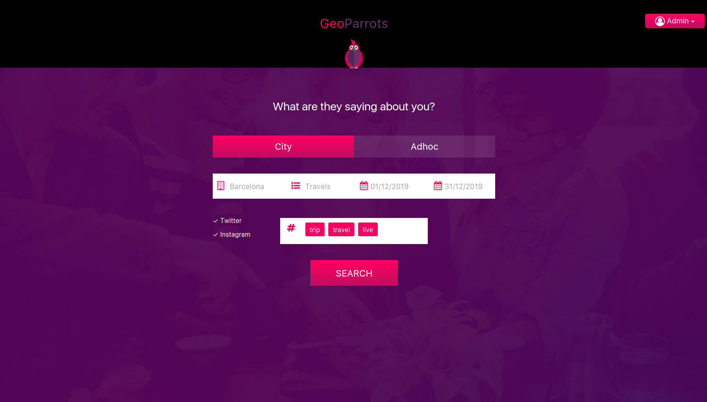
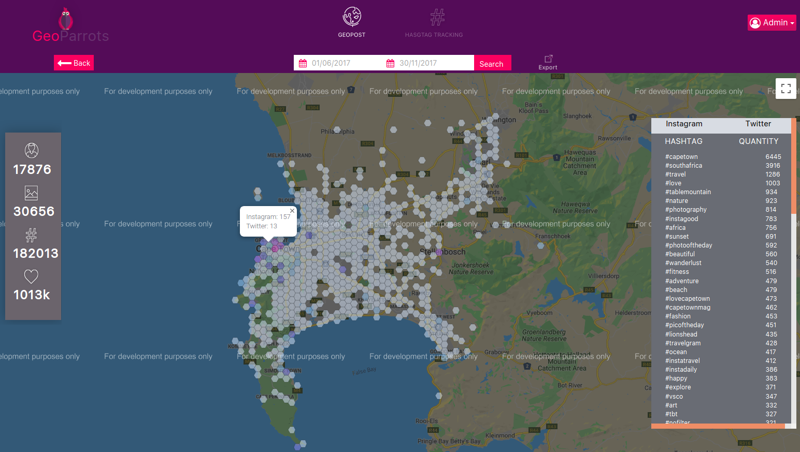
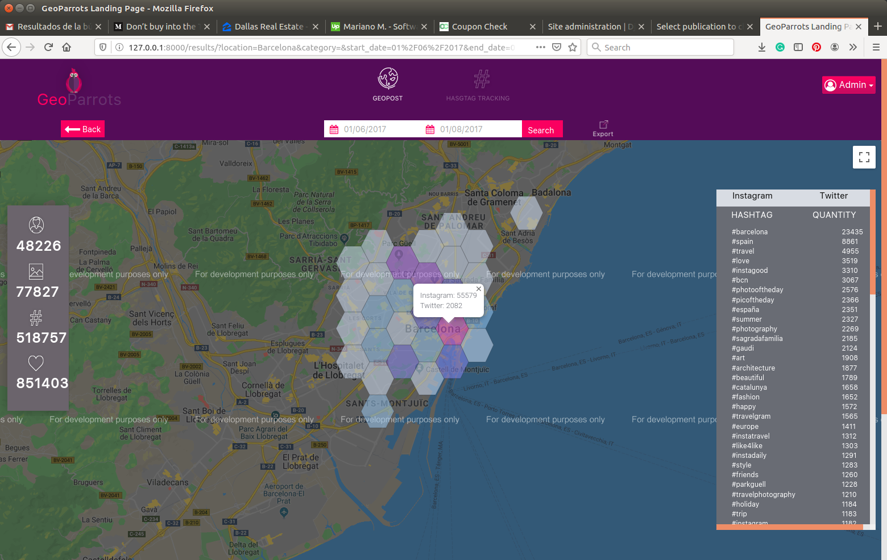
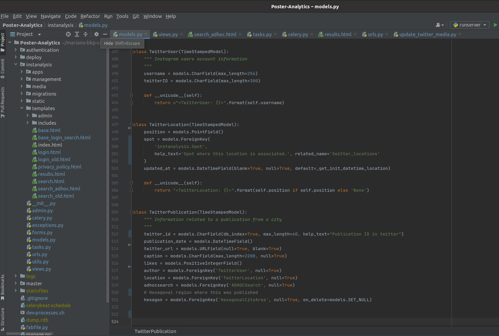
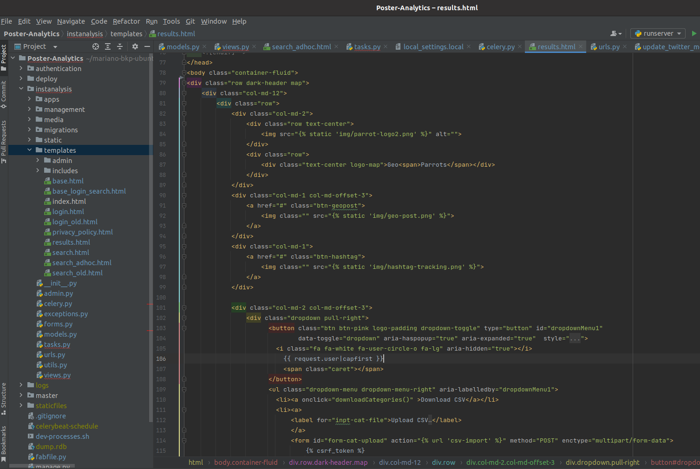

GeoParrots: A Social Media Analysis Tool





My Responsibilities
- Requirements Analysis
- DB Design
- Backend Development
- Unittesting and QA
- DevOps
- Maintenance & Support
Project Brief
The project consisted in a web tool that allows to search and visualize the distribution of twitter
and instagram publications within a geographic zone to get insights.
Key Features
- Collect and Store geolocated Twitter and Instagram publications
- Search and Visualize how publications are distributed within a city
- Explore publications around specific lat/lon coordinates
- Show a list of trending Hashtags in the region of interest
- Count the number of publications, users, likes and hashtags
- Advanced insights such as sentiment analysis
- Export data to csv
My Role / Tasks
I was involved in the development of the project from start to end, including tasks such as:
- Requirements Analysis & Effort Estimation
- Architecture Design
- Backend Development in Django
- Frontend Integration & Maintenance (screens developed by a frontend developer)
- Async tasks implementation using Celery interacting with Twitter and Instagram APIs
- Integration tests
- QA & Release Management
- Maintenance & Support